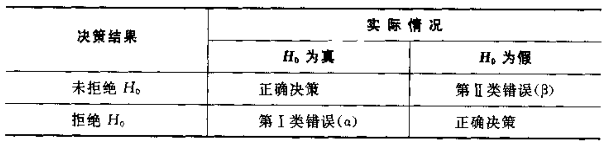

28
Dec
2016
假设检验中的P值计算-JAVA
最近产品提出需求，对于ab实验，希望能够通过实验数据计算出P值，以对数据的准确性做一个直观判断。最开始不知道P值是一个什么概念，觉得应该很简单，baidu或者google以下应该会有很多开源的代码或者jar包；又或者是自己将P值公式实现便可。但是一番查找后发现没有想的这么简单，网络上对于P值得计算过程大多含糊不清，更别提完整的计算代码。最后没办法，只有通过自己拿起概率论书本重新进行学习，以下便记录自己从P值是什么到java实现的一些细节。
1. 统计学中P值
P值是指当假设为真时所得到的观察结果的概率，简单讲P值就是概率，反映某一事件发生的可能性大小。下面几个比较重要的基础概念对于理解P值的意义会有帮助。
1.1 概率论中几个比较重要的基础概念
1.1.1 原假设与备择假设：
原假设（H0）：通常将研究者想手机证据予以反对的假设称为原假设，用H0表示；
备择假设（H1）：通常将研究者想收集证据予以支持的假设称为备择假设，或称研究假设，用H1活H2表示。
举个栗子：
某品牌洗涤剂在产品说明书中声称：平均净含量不少于500g。从消费者利益出发，有关研究人员要通过抽检其中的一批产品来验证该产品制造商的说明是否属实。
解：对于该洗涤剂的平均含量的真值为μ。如果抽检的结果发现μ<500，则表明该产品说明书中关于其净含量的内容是不真实的。一般来说，研究者抽检的意图是倾向于证实这种洗涤剂的平均净含量不符合说明书中的概述，因为这不符合说明书的陈述。如果研究者对于产品说明丝毫没有质疑，也就没有必要抽检了。所以μ<500是研究者想要收集证据支持的观点。 H0:μ>=500(净含量符合说明书);H1:μ<500(净含量不符合说明书)。< h6="">
一家研究机构估计，某城市中家庭拥有汽车的比例超过30%。为了验证这一估计是否正确，该研究机构随机抽取了一个样本进行检验。
解：设该城市中家庭拥有汽车的比例真值为π。显然，研究者想收集证据予以支持的假设是”该城市中家庭拥有汽车的比例超过30%”。因此建立的原假设与备择假设应为
H0:π<=30%（家庭拥有汽车的比例不超过30%）；
H1:π>30%（家庭拥有汽车的比例超过30%）。
- 原假设和备择假设是一个完备事件组，而且互相对立。也就是说在一项假设检验中，必有且只有一个成立；
- 在假设检验中，等号”=”总是放在原假设上。
1.1.2 单侧检验和双侧检验：
单侧检验：备择假设具有特定的方向性，并含有符号”>”或”<”的假设检验；
双侧检验：备择假设没有特定的方向性，并含有符号”≠”的假设检验。

1.2 两类错误与显著水平
如前所述，原假设与备择假设不能同时成立，我们要么拒绝原假设，要么不拒绝原假设。我们希望的情况是：当原假设正确时没有拒绝它，当原假设不正确时拒绝它。但是我们无法保证不犯错。假设检验中过程中可能发生以下两类错误：
I类错误：当原假设为真是拒绝原假设，所犯的错误称为第I类错误；
II类错误：当原假设为假时没有拒绝原假设，所犯错误称为第II类错误。

只有当原假设被拒绝时，我们才会犯第I类错误；只有当原假设未被拒绝时，我们才会犯第II类错误。因此，我们可以不犯第I类错误或不犯第II类错误，但不可能两类错误都不犯。两类错误就像一个跷跷板，当一个概率增大时，另一个减小。人们只能在两类错误的发生概率之间进行平衡。一般来说，发生哪一类错误的后果更为严重，就应该首要控制哪类错误发生的概率，但由于犯第I类错误的概率是可以又研究者控制的，因为此在假设检验中，人们往往先控制第I类错误的发生概率。
|
|
显著水平 是人们事先指定的犯第I类错误概率α的最大允许值。显著水平α越小，犯第I类错误的可能性自然就越小，但犯第II类错误的可能性则随之增大。作为一个普遍使用的原则，人们通常选择显著性水平为0.05或比0.05更小的概率。
1.3 标准化检测量与拒绝域
检验统计量 实际上是总体参数的点估计量，但点估计量并不能直接作为检验的统计量，只有将其标准化后，才能用于度量它与原假设的参数之间的差异程度。实际上，假设检验中所用的检验统计量都是标准化检验统计量，它反映了点估计量（比如样本均值）与假设的总体参数（比如假设的总体均值）相比相差了多少个标准差。
$$标准化检验统计量 = \frac{点估计量 - 假设值}{点估计量的抽样标准差}$$
拒绝域 是由显著性水平α所围成的区域。如果利用样本观测结果计算出来的检验统计量的具体数值落在了拒绝域内，就拒绝原假设，否则就不拒绝原假设。